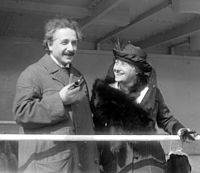
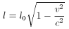

Nhưng độc đáo nhất là ý nầy: từ trước các nhà vật lí học đều cho năng lượng (énergie) và khối lượng (masse) là hai cái khác hẳn nhau; Einstein không tin như vậy, thấy tốc độ của électron tăng thì năng lượng của nó cũng tăng theo, ngỡ rằng năng lượng và khối lượng chỉ là một. Ông suy nghĩ, dùng toán học mà tìm ra được công thức lạ lùng này:
E = mc2
Nghĩa là năng lượng E bằng khối lượng m nhân với vận tốc c, rồi lại nhân với tốc độ nữa. Chẳng hạn khối lượng một gram vật chất chứa một năng lượng (tính theo erg) bằng bình phương của tốc độ ánh sáng (tính theo cm). Như vậy một kí lô vật chất nếu đổi ra thành năng lượng thì sẽ thành 25 ngàn triệu kw giờ, nghĩa là bằng tổng số năng lượng mà kĩ nghệ điện sản xuất ở Hoa Kì trong hai tháng (năm 1939), trong khi một kí lô than đốt lên chỉ cho ta được có 8,5kw giờ thôi.
Công thức E = mc2 làm xao động giới khoa học trên thế giới. Nó cho họ thấy năng lượng vĩ đại nằm trong cái nhân của nguyên tử, và sau này, khi chế tạo được bom nguyên tử, người ta mới thấy công thức đó đúng.
Nó lại giảng được tại sao mặt trời phát sinh ra ánh sáng và sức nóng cả bao nhiêu tỉ năm nay mà không nguội đi, tắt đi. Nếu mặt trời là than hay dầu lửa thì tất đã tắt ngúm từ lâu rồi. Sở dĩ còn cháy được là nhờ những phản ứng hạch tâm tạo nên những năng lượng theo công thức E = mc2. Ta thử tưởng tượng chỉ một kí lô vật chất tạo được 25 triệu kw giờ năng lượng thì khối lượng lớn lao vô cùng của mặt trời kia tạo được biết bao nhiêu năng lượng.
Nhờ những phát minh đó, Einstein được mời làm privat-dozent (tựa như giảng viên)[10] ở đại học Berne. Ông không được lãnh lương nhất định, chỉ nhận được tiền đóng góp của sinh viên, như vậy nếu sinh viên ít thì ông sẽ đói; hơn nữa, ông lại bị các giáo sư Zurich kiểm soát, nếu họ bằng lòng lối dạy của ông thì họ mới đề nghị cho ông làm giáo sư ở Zurich.
Bà Mileva muốn ngăn ông, nhưng ông nhận lời, và trong khi dạy thử, ông vẫn làm ở phòng Phát minh chấp chiếu.
Buổi đầu, chỉ có hai sinh viên lại nghe ông giảng mà cả hai đều là bạn thân của ông, muốn nâng đỡ ông. Ông phải rán trình bày thuyết của ông sao cho vừa với trình độ của họ; và lần lần số sinh viên tăng lên. Rồi một hôm, ông thấy trong đám thính giả có giáo sư Kleiner ở đại học Zurich, ông hoá ra lúng túng.
Cuối giờ, Kleiner, bằng một giọng nghiêm khắc, bảo ông:
- Bài giảng của ông hôm nay coi bộ không hợp với trình độ sinh viên. Nếu ông dạy không có kết quả hơn thì tôi khó giới thiệu ông với đại học Zurich được.
Einstein đáp:
- Không sao. Nếu vậy thì tôi xin nhiệt liệt giới thiệu với ông, ông bạn thân của tôi là Freidrich Adler vào chân giáo sư đó.
Kleiner ngạc nhiên: lần đầu tiên mới thấy một thanh niên coi thường chức giáo sư đại học như vậy.
Nhưng ít tháng sau (1909) Einstein được đề cử làm giáo sư vật lí ở Zurich. Sau này ông mới hay rằng chính Adler đã nhường chỗ đó cho ông, bảo rằng: “Nếu có thể mời Einstein dạy ở Zurich thì không có lí gì lại đề cử tôi. Tôi thú thực rằng khả năng phát minh về vật lí của tôi kém ông ấy xa”. Mối tình của hai bạn thân đó đối với nhau thật cao thượng.
Einstein báo tin cho thân mẫu: “thằng Albert của má nay là giáo sư rồi má ạ”. Ông không lấy việc đó làm danh dự nhưng biết rằng má ông sẽ sung sướng thấy ông đã có chút danh vọng.
Những bài giảng của ông ở Zurich rất được hoan nghênh vì ý kiến đã mới mẻ mà lại trình bày một cách hấp dẫn. Một hôm, ông giảng về luật biến đổi: “tốc độ càng cao thì kích thước càng rút ngắn lại” của một vật lí gia Hoà Lan là Hendrik Antoon Lorentz. Ông chứng minh luật đó bằng toán học rồi bảo:
- Như vậy, một cây thước di động theo chiều dài của nó với tốc độ 150.000 cây số/giây thì chiều dài của nó sẽ mất đi ba phân. Nếu tốc độ của nó bằng tốc độ của ánh sáng thì chiều dài của nó thành số không[11].
Một sinh viên bảo:
- Nhưng theo cái lẽ thường thì dù đứng yên hay di động, một vật vẫn giữ những kích thước của nó.
Einstein mỉm cười đáp:
- Nhưng lẽ thường là cái gì kia chứ? Chỉ là thành kiến từ hồi trẻ thôi. Phải có tinh thần từ bỏ thành kiến đi mới được.
Dẫu sao thì cũng khó mà tưởng tượng được một cây thước rút ngắn lại tới số không.
Einstein giảng:
- Sự rút ngắn đó không có gì lạ. Chiều dài không phải là sự kiện của một vật mà chỉ là một liên hệ giữa vật với người quan sát vật đó. Chỉ một phần nhỏ vũ trụ có thể giảng được bằng những giác quan của ta; còn thì phải dùng tư tưởng mà đạt được tri thức.
Dùng tư tưởng mà đạt được tri thức, đó là mục đích của môn vật lí lí thuyết (physique théorique) mà Einstein suốt đời nghiên cứu.
Lương của ông ở đại học Zurich tăng lên, nhưng ông không lấy vậy làm vui, hỏi các bạn đồng sự: “Tại sao lương người này lại lớn hơn lương người khác, vì ai cũng có bổn phận phụng sự nhân loại như nhau cả mà”. Không những vậy, ông còn cho con người là bị nô lệ tiện bạc, giá đốt hết các giấy bạc, các cổ phiếu đi thì nhân loại đỡ lo lắng, đau khổ hơn.
Ông không trọng tiền mà cũng chẳng quan tâm tới địa vị, chức tước, coi mọi người bình đẳng, cư xử với người lao động cũng lễ độ như với ông viện trưởng viện đại học. Mỗi khi trong nhà có tiệc tùng, khi khách ra về rồi, ông đích thân dọn bữa cho chị giúp việc ăn, vì “phải tôn trọng người lao động”, họ cực khổ hơn mình, và nhờ họ giúp, mình mới làm việc bằng trí óc được.
Ông rất ghét tinh thần ganh tị giữa các giáo sư đại học. Đại học ở nước nào, thời nào thì cũng có nạn bè phái, “xôi thịt”. Người ta cậy cục, nịnh bợ để cho bài nghiên cứu của mình được đăng trên tạp chí khoa học; người ta chê bai nhau: kẻ này mấy năm chẳng có công trình nào, kẻ kia chỉ giảng những điều cũ rích; người ta ấm ức vì không được thăng chức, người ta mỉa mai những người may mắn được vô viện hàn lâm… Trong các ngôi đền thờ tri thức đó, cũng có đủ các cái bỉ ổi như trên trường chính trị, kinh doanh và cả trăm giáo sư may mắn lắm được vài người có tư cách đáng gọi là bác học.
Bản tính của Einstein vốn độc lập, ít chịu trực tiếp cộng tác với người khác, cho nên thấy không khí đó trong Đại học; ông càng chán ngán, cứ cặm cụi làm việc, mặc người khác tranh giành địa vị với nhau. Dĩ nhiên, bạn đồng sự của ông cũng không ưa ông.
Hai ông bà lúc này đã có hai người con trai: Hans và Eduard; bà phàn nàn rằng không đủ tiêu, ông ngạc nhiên hỏi tại sao. Bà đáp: tại có thêm con, và khách khứa nhiều hơn trước.
Ông thú thực không có cách nào kiếm thêm tiền được và bà phải nuôi thêm người ở trọ.
Năm 1910, ông được dạy môn vật lí lí thuyết ở đại học Prague, chức cao hơn, lương cũng cao hơn, năm 1912 lại được mời dạy ở trường Polytechnicum tại Zurich và hai năm sau hai nhà bác học danh tiếng Max Plank và Walter Nernst tới mời ông làm giáo sư ở đại học Berlin và vô hàn lâm viện khoa học Đức.
Ông nhận lời mời với điều kiện vẫn giữ quốc tịch Thuỵ Sĩ[12].
Theo Hilaire Cuny trong cuốn Einstein (Seghers - 1961) thì ông nhận qua Đức dạy vì ông muốn xa bà: không khí trong gia đình trong mấy năm nay không còn vui như hồi đầu, tính tình của bà không hiểu sao đã thay đổi, nhiều lúc quạu quọ, bà không chịu ở Đức, nhất định ở lại Thuỵ Sĩ với hai người con.
Nhưng theo Aylesa Forsee trong cuốn Einstein et là phisique théorique (Nouveaux Horizons – 1966) thì ông vẫn quí vợ, khi xa vợ con, ông hi vọng tới Berlin ít tháng rồi vợ con ông sẽ qua sau, nhưng bà thưa viết thư cho ông rồi lần lần họ mặc nhiên li thân nhau.
Ở Berlin được ít lâu, ông cưới cô Elsa một người em họ cũng đã li thân với chồng và có hai người con gái riêng: Margot và Ilse. Cuộc hôn nhân này có hạnh phúc hơn: bà Elsa tính tình vui vẻ, không biết chút gì về vật lí, nhưng khéo chiều chồng và tận tâm săn sóc chồng. Sự hiểu biết của bà về môn toán chỉ vừa đủ để làm bốn phép tính và giữ sổ chi tiêu trong nhà, bà không thể góp ý với chồng về công việc nghiên cứu vật lí được, nhưng nhận định được thiên tài của chồng và tự nhận trách nhiệm lo hết mọi việc gia đình, tiếp đãi khách khứa, để chồng được rảnh trí mà suy tư, tìm tòi.

Albert Einstein và Elsa
Trong thời chiến tranh, nhiều thức ăn bị hạn chế, bà cố xoay sở cho ông không bị thiếu thốn. Tới bữa ăn mà ông vẫn mải mê với công việc thì bà khẽ nhắc ông. Khách lạ tới, bà xét có nên để ông tiếp không, sợ có nhiều người chẳng có việc gì quan trọng cũng tới quấy rầy ông. Tóm lại, bà che chở, săn sóc ông gần như săn sóc một em bé. Điều đó có lần làm ông bực mình, nhất là những khi đi du lịch nước ngoài, bà muốn ăn bận đàng hoàng, nhắc ông bận thứ áo này, đeo chiếc cà vạt nọ… mà ông không muốn lệ thuộc những vật chất đó, không muốn lệ thuộc thói đời, nên ông phàn nàn với người khác:
- Nhà tôi ở nhà suốt ngày săn sóc các đồ đạc, bàn ghế, giường tủ; khi đi xa, thì chỉ có tôi là món đồ duy nhất cho bà ấy săn sóc.
Thỉnh thoảng bà cũng đùa ông:
- Mình giỏi toán nhất đời, ai nấy đều phục, nhưng không tính nổi số tiền còn gởi ngân hàng là bao nhiêu.
Ông đáp:
- Có lẽ tại anh thấy con số trên trương mục[13] khác những con số trên một bài toán vật lí.
Lần khác bà bảo ông:
- Nhiều người hỏi em lúc này mình đương nghiên cứu cái gì. Nếu em trả rằng em không biết thì ra vẻ em ngu ngốc quá. Mình giảng qua cho em được không?
Ông suy nghĩ một chút rồi đáp:
- Lần sao có ai hỏi thì em cứ đáp rằng em biết nhưng không thể nói ra được, vì đó là điều bí mật.
[10] Theo trang http://www.dict.cc/german-english/Privatdozent.html thì “privatdozent” có nghĩa là: associate professor (giảng nghiệm viên). (Goldfish).
[11] Ý nói chiều dài của cây thước phụ thuộc vào vận tốc theo công thức

. (Goldfish).[12] Theo Nguyễn Xuân Sanh thì: “Đầu năm 1954, ông chấp nhận lời mời của Hàn Lâm viện Phổ để về Berlin. Năm đó ông mới 35 tuổi, thành viên trẻ nhất của Hàn Lâm viện Phổ. Năm 1913. Planck (55 tuổi) và Nernst (49 tuổi) cùng với phu nhân đã từ Berlin lấy xe lửa đi qua Zürich để mời cho được Einstein về Berlin. Hai ông đã có ấn tượng rất mạnh về Eisntein khi gặp Einstein tại hội nghị quốc tế Solvay lần thứ năm năm 1911 ở Bỉ, và có quyết tâm mời Einstein về Berlin bằng được. Hai ông hứa với Einstein những đãi ngộ hết sức đặc biệt: ngoài làm thành viên của Hàn lâm viện Phổ với mức lương cao nhất (12.000 Đức Mã một năm, chưa kể tiền của đại học, tiền “danh dự” của Viện hàn lâm do sự nổi tiếng) ông còn được làm giáo sư Đại học Berlin mà không phải giảng dạy. Alexander Humboldt là người đầu tiên được hưởng chế độ ưu đãi tương tự như thế của Hàn lâm viện Phổ và Einstein là người cuối cùng. Ngoài ra ông còn làm viện trưởng Viện Vật lý Vua Wilhelm (Viện Max Planck) sẽ được thành lập. Các ưu đãi ngoài sức tưởng tượng là những chính sách đặc biệt ngoại hạng dành cho Einstein, lại được mang đến bởi Planck và Nernst là những người Einstein đã từng ngưỡng mộ!”. (Sđd, trang 84). (Goldfish).
[13] Trương mục: Sách in là “chương mục”. (Goldfish).